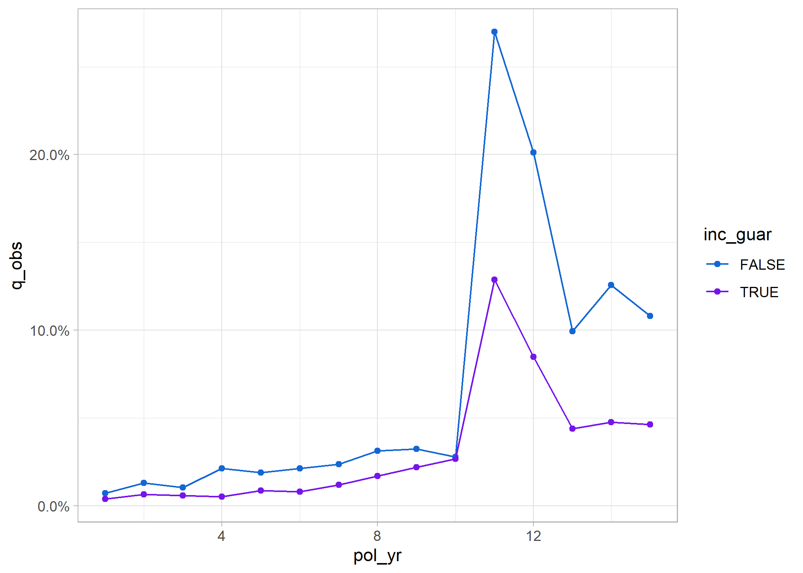

The actxps package provides a set of tools to assist with the creation of actuarial experience studies. Experience studies are used by actuaries to explore historical experience across blocks of business and to inform assumption setting for projection models.
- The
expose()family of functions convert census-level records into policy or calendar year exposure records. - The
exp_stats()function creates experience summary data frames containing observed termination rates and claims. Optionally, expected termination rates, actual-to-expected ratios, and limited fluctuation credibility estimates can also be returned. - The
autoplot()andautotable()functions creates plots and tables for reporting. - The
exp_shiny()function launches a Shiny app that allows for interactive exploration of experience drivers.
Installation
The actxps package can be installed from CRAN with:
install.packages("actxps")To install the development version from GitHub use:
devtools::install_github("mattheaphy/actxps")Basic usage
An expanded version of this demo is available in vignette("actxps").
The actxps package includes simulated census data for a theoretical deferred annuity product with an optional guaranteed income rider. The grain of this data is one row per policy.
library(actxps)
library(dplyr)
census_dat
#> # A tibble: 20,000 × 11
#> pol_num status issue_date inc_g…¹ qual age product gender wd_age premium
#> <int> <fct> <date> <lgl> <lgl> <int> <fct> <fct> <int> <dbl>
#> 1 1 Active 2014-12-17 TRUE FALSE 56 b F 77 370
#> 2 2 Surrend… 2007-09-24 FALSE FALSE 71 a F 71 708
#> 3 3 Active 2012-10-06 FALSE TRUE 62 b F 63 466
#> 4 4 Surrend… 2005-06-27 TRUE TRUE 62 c M 62 485
#> 5 5 Active 2019-11-22 FALSE FALSE 62 c F 67 978
#> 6 6 Active 2018-09-01 FALSE TRUE 77 a F 77 1288
#> 7 7 Active 2011-07-23 TRUE TRUE 63 a M 65 1046
#> 8 8 Active 2005-11-08 TRUE TRUE 58 a M 58 1956
#> 9 9 Active 2010-09-19 FALSE FALSE 53 c M 64 2165
#> 10 10 Active 2012-05-25 TRUE FALSE 61 b M 73 609
#> # … with 19,990 more rows, 1 more variable: term_date <date>, and abbreviated
#> # variable name ¹inc_guarConvert census records to exposure records with one row per policy per year.
exposed_data <- expose(census_dat, end_date = "2019-12-31",
target_status = "Surrender")
exposed_data
#> Exposure data
#>
#> Exposure type: policy_year
#> Target status: Surrender
#> Study range: 1900-01-01 to 2019-12-31
#>
#> # A tibble: 141,252 × 15
#> pol_num status issue_date inc_guar qual age product gender wd_age premium
#> * <int> <fct> <date> <lgl> <lgl> <int> <fct> <fct> <int> <dbl>
#> 1 1 Active 2014-12-17 TRUE FALSE 56 b F 77 370
#> 2 1 Active 2014-12-17 TRUE FALSE 56 b F 77 370
#> 3 1 Active 2014-12-17 TRUE FALSE 56 b F 77 370
#> 4 1 Active 2014-12-17 TRUE FALSE 56 b F 77 370
#> 5 1 Active 2014-12-17 TRUE FALSE 56 b F 77 370
#> 6 1 Active 2014-12-17 TRUE FALSE 56 b F 77 370
#> 7 2 Active 2007-09-24 FALSE FALSE 71 a F 71 708
#> 8 2 Active 2007-09-24 FALSE FALSE 71 a F 71 708
#> 9 2 Active 2007-09-24 FALSE FALSE 71 a F 71 708
#> 10 2 Active 2007-09-24 FALSE FALSE 71 a F 71 708
#> # … with 141,242 more rows, and 5 more variables: term_date <date>,
#> # pol_yr <int>, pol_date_yr <date>, pol_date_yr_end <date>, exposure <dbl>Create a summary grouped by policy year and the presence of a guaranteed income rider.
exp_res <- exposed_data |>
group_by(pol_yr, inc_guar) |>
exp_stats()
exp_res
#> Experience study results
#>
#> Groups: pol_yr, inc_guar
#> Target status: Surrender
#> Study range: 1900-01-01 to 2019-12-31
#>
#> # A tibble: 30 × 6
#> pol_yr inc_guar n_claims claims exposure q_obs
#> * <int> <lgl> <int> <int> <dbl> <dbl>
#> 1 1 FALSE 56 56 7720. 0.00725
#> 2 1 TRUE 46 46 11532. 0.00399
#> 3 2 FALSE 92 92 7103. 0.0130
#> 4 2 TRUE 68 68 10612. 0.00641
#> 5 3 FALSE 67 67 6447. 0.0104
#> 6 3 TRUE 57 57 9650. 0.00591
#> 7 4 FALSE 123 123 5799. 0.0212
#> 8 4 TRUE 45 45 8737. 0.00515
#> 9 5 FALSE 97 97 5106. 0.0190
#> 10 5 TRUE 67 67 7810. 0.00858
#> # … with 20 more rowsCalculate actual-to-expected ratios.
First, attach one or more columns of expected termination rates to the exposure data. Then, pass these column names to the expected argument of exp_stats().
expected_table <- c(seq(0.005, 0.03, length.out = 10), 0.2, 0.15, rep(0.05, 3))
# using 2 different expected termination rates
exposed_data <- exposed_data |>
mutate(expected_1 = expected_table[pol_yr],
expected_2 = ifelse(exposed_data$inc_guar, 0.015, 0.03))
exp_res <- exposed_data |>
group_by(pol_yr, inc_guar) |>
exp_stats(expected = c("expected_1", "expected_2"))
exp_res
#> Experience study results
#>
#> Groups: pol_yr, inc_guar
#> Target status: Surrender
#> Study range: 1900-01-01 to 2019-12-31
#> Expected values: expected_1, expected_2
#>
#> # A tibble: 30 × 10
#> pol_yr inc_g…¹ n_cla…² claims expos…³ q_obs expec…⁴ expec…⁵ ae_ex…⁶ ae_ex…⁷
#> * <int> <lgl> <int> <int> <dbl> <dbl> <dbl> <dbl> <dbl> <dbl>
#> 1 1 FALSE 56 56 7720. 0.00725 0.005 0.03 1.45 0.242
#> 2 1 TRUE 46 46 11532. 0.00399 0.005 0.015 0.798 0.266
#> 3 2 FALSE 92 92 7103. 0.0130 0.00778 0.03 1.67 0.432
#> 4 2 TRUE 68 68 10612. 0.00641 0.00778 0.015 0.824 0.427
#> 5 3 FALSE 67 67 6447. 0.0104 0.0106 0.03 0.985 0.346
#> 6 3 TRUE 57 57 9650. 0.00591 0.0106 0.015 0.560 0.394
#> 7 4 FALSE 123 123 5799. 0.0212 0.0133 0.03 1.59 0.707
#> 8 4 TRUE 45 45 8737. 0.00515 0.0133 0.015 0.386 0.343
#> 9 5 FALSE 97 97 5106. 0.0190 0.0161 0.03 1.18 0.633
#> 10 5 TRUE 67 67 7810. 0.00858 0.0161 0.015 0.532 0.572
#> # … with 20 more rows, and abbreviated variable names ¹inc_guar, ²n_claims,
#> # ³exposure, ⁴expected_1, ⁵expected_2, ⁶ae_expected_1, ⁷ae_expected_2Create visualizations using the autoplot() and autotable() functions.
library(ggplot2)
.colors <- c("#eb15e4", "#7515eb")
theme_set(theme_light())
exp_res |>
autoplot() +
scale_color_manual(values = .colors) +
labs(title = "Observed Surrender Rates by Policy Year and Income Guarantee Presence")
autotable(exp_res)
Launch a shiny app to interactively explore experience data.
exp_shiny(exposed_data)
Logo
Image by macrovector on Freepik